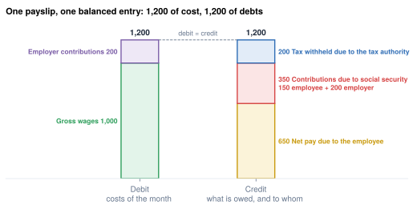

Accounting for payroll
One payslip, one balanced entry, and liabilities that wait to be paid
- Build the journal entry of a payslip: costs on one side, liabilities on the other
- Explain why employee deductions are liabilities, and only the employer charges add cost
- Follow MyVidangeCompany's October 2026 through T-accounts until every liability is paid
- Explain provisions for holiday pay, 13th months and gratuities
- Describe how Odoo creates the entry and the payment file
At month end the accountant wants one thing from payroll: a journal entry. The salary and the employer's charges are costs. Everything withheld is money owed to someone else until it is paid. Payroll accounting is mostly the story of those debts. The shape is the same in every country; only the account numbers change.
What payroll accounting is
Payroll accounting (payroll bookkeeping, booking the payroll) records the pay run in the company's books. Each period it posts one balanced journal entry: the cost of the period on the debit side, and on the credit side what the company now owes, and to whom. Later payments close those debts one by one.
Three things follow from that definition:
- The cost is the employer cost. Gross wages plus the employer's own charges; nothing withheld from the employee adds to it.
- Withheld money is a debt, not a cost. Until it is paid, the tax and contributions kept back sit on liability accounts, like the net pay not yet transferred.
- The entry is a sum of payslip lines. Each salary rule says which account it goes to; the entry adds them up.

Case study: MyVidangeCompany's entry
Belgian companies use a standard chart of accounts (legal text not retrieved, UNVERIFIED): 6202 remuneration, 621 employer social security, 623 other personnel costs, and the liabilities 453 (tax withheld), 454 (social security), 455 (net pay due) and 440 (suppliers).
Worked example: Mélanie and Marie, October 2026
| Account | Mélanie debit | Mélanie credit | Marie debit | Marie credit |
|---|---|---|---|---|
| 6202 Gross wages | 4,000.00 | 7,500.00 | ||
| 621 Employer contributions (− reduction + CO2) | 1,004.80 | 1,926.34 | ||
| 623 Meal vouchers, employer part | 196.02 | |||
| 454 Social security due | 1,563.84 | 2,967.53 | ||
| 453 Tax withheld due | 826.70 | 1,770.92 | ||
| 455 Net pay due | 2,614.26 | 4,663.91 | ||
| 440 Meal-voucher issuer | 220.00 | |||
| Total | 5,004.80 | 5,004.80 | 9,622.36 | 9,622.36 |
For Mélanie, 454 collects the employee, special and employer contributions. Marie's car benefit does not appear at all: no money moves for it. Each total equals the employer cost of Chapter 3.1
The five regular payslips of October 2026 make one entry of 27,849.02 € on each side: 14,917.31 € of net pay due, 8,065.22 € of social security, 4,646.49 € of tax withheld and 220.00 € to the voucher issuer.1 The debit side is the month's employer cost; the credit side says where the money will go.
In Odoo. The demo database books the same accounts with six digits (620200, 454000…); its February 2026 entry balances at 23,426.76 €. It books only the employee part of the meal vouchers, so agree with the customer's accountant how vouchers are booked.2
From book to bank: the T-accounts
Accountants follow each account with a T-account: the account drawn as a large T, its name on top. Amounts that increase the account go on one side, amounts that decrease it on the other, and the difference between the two sides, the balance, is what the account holds. For a debt such as net pay due, the right side (credit) records what the company comes to owe and the left side (debit) what it pays off, so the balance is what is still owed.
Take account 455, the net pay MyVidangeCompany owes its employees for October 2026:
The payroll entry fills the account; the bank payment empties it, and books the same amount as money leaving the bank account (550). The three other debts of the entry work the same way, each emptied on its own date:
| Account | Emptied by | When |
|---|---|---|
| 453 Tax withheld, 4,646.49 € | payment with the withholding return | by 13 November |
| 454 Social security, 8,065.22 € | monthly advances, then the balance | balance by 31 January |
| 440 Voucher issuer, 220.00 € | payment of its invoice | on the invoice terms |
A balance left on a payroll liability after its due date is the first thing an accountant checks: a payment that did not happen, or a line booked on the wrong account.
Common pitfall
Booking the employee contributions and the withholding as expenses. They are liabilities; the cost is already in the gross wages. Booking them as expenses counts them twice.
Provisions: cost now, cash later
A provision is a debt the company records before the bill arrives: it knows it will have to pay an amount later, so it books the cost now, a little each month. Take a 13th month of 1,200, earned over the year and paid in December (illustrative numbers, contributions left out):
| Month | Cost booked | Provision (owed so far) | Cash paid |
|---|---|---|---|
| January | 100 | 100 | 0 |
| February | 100 | 200 | 0 |
| … | … | … | … |
| December, before payment | 100 | 1,200 | 0 |
| December, payment | 0 | 0 | 1,200 |
Without the provision, December would carry 1,200 of cost and the other months none. With it, each month carries its share, and the December payment simply pays off the debt already recorded.
Saudi Arabia and the UAE provision the gratuity, Mexico and the Philippines the bonuses (Chapter 6). Many Belgian employers provision holiday pay (account 625 against 456), an accounting policy the book does not compute.
Payment files
The net pay leaves the company as one bank file with a line per employee; the legal payment date applies (Chapter 1).3 Tax and contributions are paid separately, each with its own reference.4 MyVidangeCompany uses a SEPA credit-transfer file.
Around the world
- Belgium, Netherlands, Luxembourg: SEPA credit transfer.
- United States: a NACHA (ACH) file.
- Australia: an ABA bank file.
- UAE, Saudi Arabia: a Wage Protection System salary file, checked by the labour ministry.
- India: a payment advice and a bank e-NET file.
In Odoo. hr_payroll_account gives each salary rule an account_debit and account_credit, and each structure a journal; each localization's _account module sets them for its chart. At validation Odoo builds the entry from the lines and groups them by account. If they do not balance (a rule without an account), Odoo adds an Adjustment Entry line instead of refusing: the entry posts and looks fine, and it is wrong. hr_payroll_account_iso20022 exports the SEPA file. Chapter 16 posts and pays February 2026.
In practice
Before go-live, validate one payslip per structure and read each entry against the chart of accounts. Agree the accounts with the accountant before the first pay run; changing them later means reversing entries.
Summary
- A payslip becomes one balanced entry: costs (gross wages, employer contributions, other personnel costs) against liabilities (net pay, social security, tax withheld, third parties).
- Employee deductions are liabilities held for third parties; only employer charges add cost.
- MyVidangeCompany's October 2026: 27,849.02 € on each side. Each liability is closed by a payment on its own date.
- A benefit in kind moves no money and has no line in the entry.
- Pay earned monthly but paid later (holiday pay, 13th month, gratuity) is provisioned each month.
- Odoo books the entry at validation from the accounts on the salary rules, and balances any gap with an Adjustment Entry line that you should treat as a bug.
-
Independent calculator,
research/numbers_be_calc.md, sections 10.1 and 10.12. ↩↩ -
Journal entry of the February 2026 pay run on the demo database,
research/numbers_be.md, section 7. ↩ -
SPF Emploi, time and date of payment: https://emploi.belgique.be/fr/themes/remuneration/protection-de-la-remuneration/epoque-et-date-de-paiement. ↩
-
SPF Finances, withholding tax return and payment account: https://finances.belgium.be/fr/entreprises/personnel_et_remuneration/precompte_professionnel/declaration. ↩